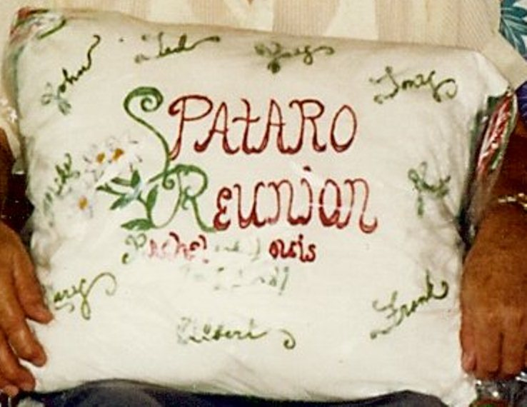
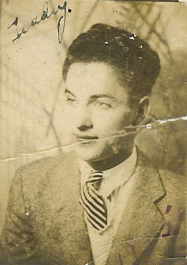
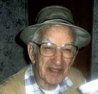

The Spataro - Perillo Household

Louis Spataro and Rachel Perillo
and 9 children

 |
 |
|
|
 |
 |
 | |
|
|||
| Frank S. Spataro, Sr | Patsy Jay "Jay" Spataro | Anthony Thomas "Tony" Spataro | John "Johnie" Spataro | Genevieve Catherine "Jennie" Spataro | Tillio "Ted" Spataro | Albert "Fatty" Spataro | Michael Spataro | Mary Lou Spataro | |||
| SSN: 213-09-6538 | SSN: 182-01-4161 | SSN: 236-52-9267 | SSN: 182-01-4167 | SSN: 182-01-6143 | SSN: 214-14-7960 | SSN: 188-16-6955 | SSN: 216-22-6582 | ||||
| 1905 born April 26 Zihlman, Maryland, USA |
1908 born March 8 Piedmont, West Virginia, USA |
1911 born January 14 Morantown, Maryland, USA |
1913 born January 18 Morantown, Maryland, USA |
1915 born January 1 | 1917 born April 17 Morantwon, Maryland, USA |
1920 born May 12 Morantown, Maryland, USA |
1922 born June 10 Morantown, Maryland, USA |
1924 born September 16 Morantown, Maryland, USA |
|||
| Josephine Harden (?-?)
Bertha Mae Harden (1913-1999)
|
Edith Louise Swauger (1914-1999)

 |
Nora May Johns (1916-1977)
Mary Kelly (?-?)
|
 Alverda "Pete" Sturtz (1920-2005) Alverda "Pete" Sturtz (1920-2005)
|
Thomas Franklin Miller (1915-1980)
1980 Thomas passed away (age 64) |
 Mary Alice Skidmore (1918-1986) Mary Alice Skidmore (1918-1986)


 |
Florence "Flossy" Skidmore
Elizabeth T "Betty" "Red-Head Betty" Rowan (1924-1979)
Ina Lee Skidmore-Klosterman
|
Margaret "Mig" Kaefer (1925-2005)
|
Francis Gregory Lynch (1921-2007)
|
|||
1942 drafted for WWII (age 37) |
1940 drafted for WWII (age 32) |
1940 drafted for WWII (age 29) |
1940 drafted for WWII (age 27) |
1940 drafted for WWII (age 22) |
1940 drafted for WWII (age 21) |
1942 drafted for WWII (age 20) |
1942 Francis drafted for WWII (age 20) |
||||
1965 died April 8 (age 59)  |
1995 died August 12 (age 87)
 |
1984 died January (age 73) Allegany, Maryland, USA |
1988 died March 6 (age 74) | 1988 died June 3 (age 73)
 |
2000 died December 9 (age 83) | 2009 died February 16 (age 88)
 |
1998 died July 3 (age 76) | 1990 died May 7 (age 65) | |||
 Saint Raymond's Cemetery Melcroft, PA FindaGrave.com |
 Saint Michael's Cemetery Frostburg, MD FindaGrave.com |
 Cook Cemetery Somerset, PA FindaGrave.com |
 Cook Cemetery Somerset, PA FindaGrave.com |
 Sharon Hills Memorial Park Dover, DE FindaGrave.com |
 Saint Michael's Cemetery Frostburg, MD FindaGrave.com |
 Frostburg Memorial Park Frostburg, MD FindaGrave.com |
 Frostburg Memorial Park Frostburg, MD FindaGrave.com |
 Saint Patrick's Cemetery Mount Savage, MD FindaGrave.com |
|||
1920 Census* 1930 Census ~ Head 1940 Census ~ Head |
1920 Census* 1930 Census* 1940 Census ~ Head |
1930 Census* 1940 Census ~ Head |
1930 Census* 1940 Census* |
1930 Census* 1940 Census ~ Wife |
1930 Census* 1940 Census ~ Head |
1940 Census* |
1940 Census* |
1940 Census* |
|||
{kind=link}
{kind=link}
{kind=link}
{kind=link}
{kind=link}
{kind=link}
{kind=link}
{kind=link}
{kind=link}
{kind=link}
{kind=link}
{kind=link}
| Censuses | |||||||
| Year | Location | Image | Household | Relationship | Age at Last Birthday | Occupation | |
| 30 April 1910 | Allegany County, MD | 1910 Census | Spataro Parice Scarpento Schaffe |
Louis Rachel Frank Patrick Joseph Joseph Louis Tony Bartole |
Head Wife Son Son Boarder Boarder Boarder Boarder Boarder |
27 27 6 3 32 32 40 27 48 |
coal miner -- miner -- coal miner coal miner coal miner coal miner coal miner |
| 20 January 1920 | Allegany County, MD | 1920 Census | Spataro |
Louis Rachelo? Frank Pasquale Antonio Goldie? |
Head Wife Son Son Son Son |
38 37 15 12 8 3 |
miner -- miner -- -- -- |
| 5 April 1930 | Allegany County, MD | 1930 Census | Spataro |
Luigi Rachtel? Patsy Tony Johnie Jennie Tillio Albert Michial Mary L |
Head Wife Son Son Son Daughter Son Son Son Daughter |
48 49 23 20 18 14 12 10 8 5 |
miner -- miner miner miner -- -- -- -- -- |
| 16 April 1940 | Allegany County, MD | 1940 Census | Spataro |
Louis Rachel John Albert Mary Michel |
Head Wife Son Son Daughter Son |
63 63 26 20 16 19 |
miner -- miner miner -- -- |